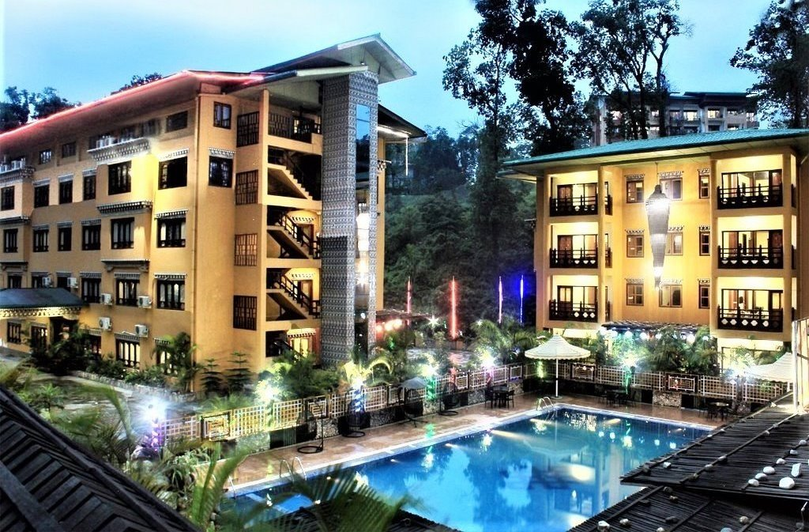
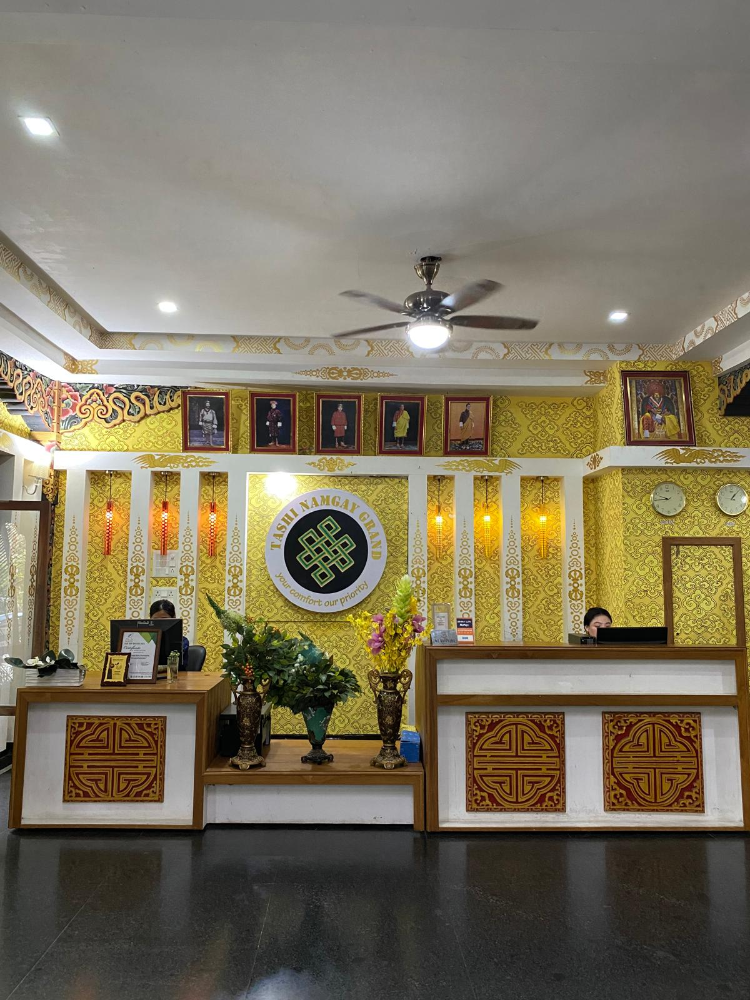

Comfort, hospitality and a welcoming stay in Phuentsholing.

Located in Rinchending, Phuentsholing, Bhutan, Tashi Namgay Grand offers comfortable accommodation for guests visiting the city for business, leisure and travel.
With a selection of rooms and suites, our hotel provides guests with a comfortable place to relax and enjoy their stay in Phuentsholing.
We aim to provide warm hospitality and a pleasant experience for every guest who stays with us.

Step into a welcoming environment designed to make your stay comfortable from the moment you arrive.
Our lobby provides a relaxed setting where guests can arrive, meet and begin their stay at Tashi Namgay Grand.
Choose from our Deluxe Rooms, Studio Apartments, Grand Deluxe Rooms and Suites.
Located in Rinchending, Phuentsholing, providing convenient access to the city.
We strive to provide a welcoming and comfortable experience for our guests.
Explore our range of accommodation options and find the room that suits your stay.
Explore Our RoomsContact us to check availability and make your reservation.
Book Your Stay